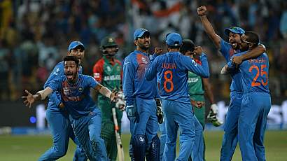

| Featured | International | ICC World T20 | ICC Womens World T20 | Plunket Shield |
| BAN 145/9(20.0 ovs) | AFG 127/9(20.0 ovs) | IREW 89/9(20.0 ovs) | Australian Women |
| IND 146/7 (20.0 Ovs) | ENG 142/7 (20.0 Ovs) | RSAW 156/5 (20.0 Ovs) | Sri Lanka Women |
| India won by 1 run | England Won by 15 runs | Sounth Africa Women Won by 63 runs | Thursday, 24 Mar, 06:00AM |
INDIA VS BANGLADESH
India vs Bangladesh World T20 2016: Dhoni reply after smashing bangladesh
India Vs Bangladesh Final Man Of The Match Awards Asia Cup T20 2016